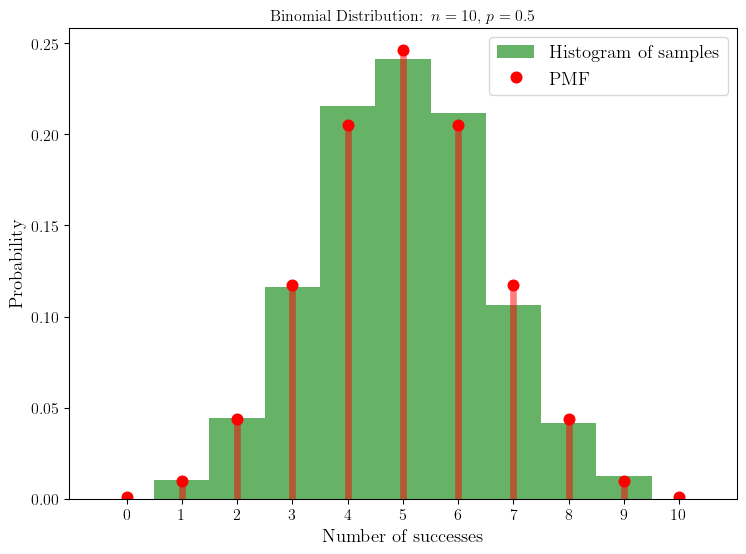
Pèle mêle sur les probabilités
Quelques exemples de visualisations de résultats élémentaires en théorie des probabilités.
1 Echantillonage de la loi binomiale
Dans ce notebook, nous allons utiliser la librairie scipy.stats pour discuter quelques résultats élémentaires en théorie des probabilités que nous avons étudiés.
1.1 Loi binomiale
Echantillonons la loi binomiale avec des paramètres \(n=10\) et \(p=0.5\).
On voit que la distribution est en très bon accord avec la distribution théorique, ici représentée en rouge.
Essayons d’augmenter le nombre de répétitions de l’expérience, \(n\).
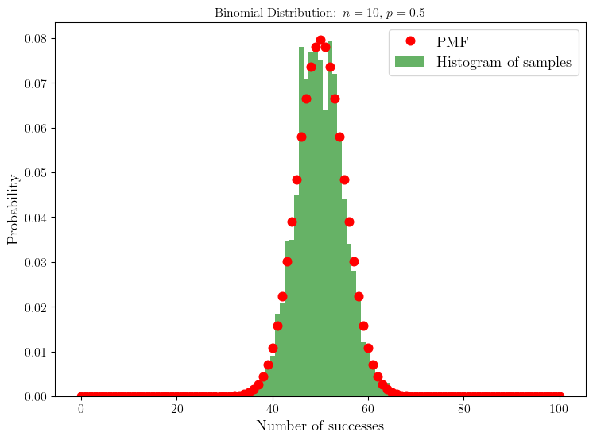
Excellent, on comprend que la distribution de probabilité théorique correspond bien à la distribution empirique obtenue par échantillonnage. Regardons ce qu’il se passe si l’on varie \(p\).
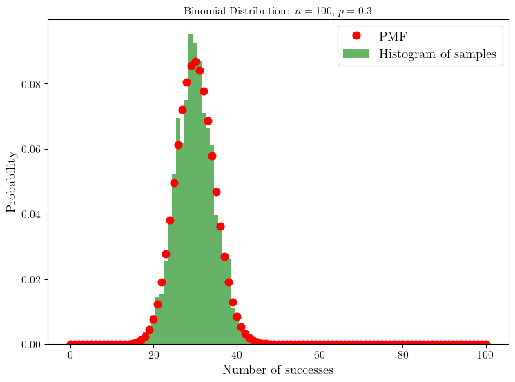
On voit que la distribution des échantillons s’est déplacée vers la gauche. On pouvait s’y attendre puisque la probabilité de succès \(p\) a diminué. Ainsi, la probabilité de réaliser un grand nombre de succès parmi les \(n=100\) expériences diminue également.
Enfin, on peut vérifier que la moyenne et la variance des échantillons correspondent bien aux valeurs théoriques données par : \[ \mathbb{E}[X] = n p, \quad \mathbb{V}[X] = n p (1-p). \]
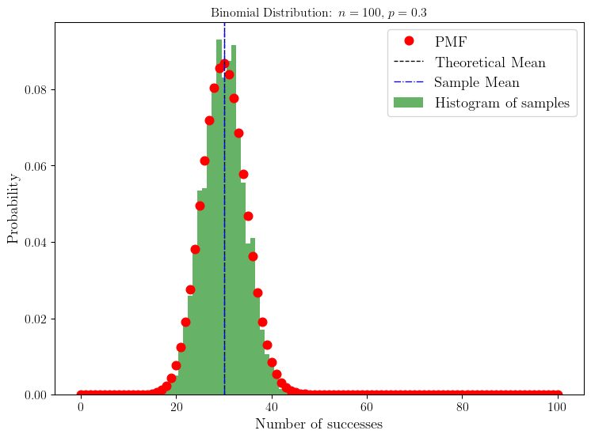
Theoretical Mean: 30.0, Sample Mean: 30.0225
Difference in Mean: 0.022500000000000853Theoretical variance: 21.0, Sample Variance: 19.717993749999998
Difference in Variance: 1.282006250000002A nouveau cela fonctionne très bien ! Et on voit que la largeur de la distribution est de l’ordre de la vingtaine d’échantillons autour de la moyenne.
1.2 Loi binomiale à partir de loi de Bernoulli
Nous avons vu que la loi binomiale pouvait être vue comme la somme de variables aléatoires indépendantes suivant une loi de Bernoulli.
\[ X = \sum_{i=1}^n Y_i, \quad Y_i \hookrightarrow \mathcal{B}(p) \]
n = 10
p = 0.5
def draw_bernoulli(n, p):
return stats.bernoulli.rvs(p, size=n)
# Sample from the Bernoulli distribution and sum to get Binomial samples
np.random.seed(42) # Fix the seed for reproducibility
bernoulli_samples = draw_bernoulli(n, p)
print(bernoulli_samples)[0 1 1 1 0 0 0 1 1 1]Ici, on a tiré \(n=10\) échantillons d’une loi de Bernoulli de paramètre \(p=0.5\). Cela correspond à tirer une configuration de succès et d’échecs pour 10 expériences indépendantes et identiques dans le contexte de la loi de Bernoulli. Dans l’exemple ci-dessus, on a obtenu 6 succès (1) et 4 échecs (0).
np.random.seed(100)
bernoulli_samples = draw_bernoulli(n, p)
print(bernoulli_samples)[1 0 0 1 0 0 1 1 0 1]Cette fois on a obtenu 5 succès et 5 échecs. En répétant cette expérience un grand nombre de fois, on peut reconstituer la loi binomiale.
num_samples = 2000
binom_from_bernoulli_samples = np.array([
np.sum(draw_bernoulli(n, p)) for _ in range(num_samples)
])
binom_scipy_samples = stats.binom.rvs(n=n, p=p, size=num_samples)
k = np.arange(0, n+1)
pmf = stats.binom.pmf(k, n=n, p=p)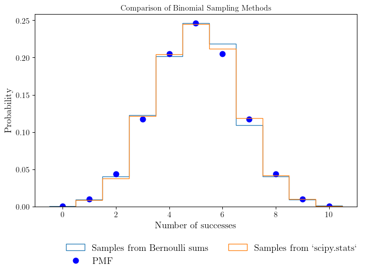
scipy.stats.binom.
On voit quà l’erreur d’échantillonnage près, les deux méthodes d’échantillonnage de la loi binomiale sont équivalentes. 🚀
2 Lien entre loi de probabilité et moments
Nous avons vu dans le cours comment calculer la moyenne et la variance d’une variable aléatoire à partir de sa loi de probabilité. On parle des moments d’une variable aléatoire pour désigner les quantités
\[ \mathbb{E}[X^k] = \sum_x x^k p_X(x). \]
Dans le cas de la loi binomiale, nous avons calculé sa moyenne et sa variance. Il est évident qu’étant donné la loi de probabilité (\(\mathbb{P}(X=k)\)), on peut calculer n’importe quel moment d’une variable aléatoire. Mais il faut faire attention au fait que l’inverse n’est pas forcément vrai: deux variables aléatoires peuvent avoir la même moyenne et variance, mais des lois de probabilité différentes. Cette section vise à illustrer ce point.
Dans ce qui va suivre, nous allons considérer une variable aléatoire continue \(X\) suivant une loi normale (Gaussienne) centrée réduite, i.e. de moyenne 0 et de variance 1.
\[ X \hookrightarrow \mathcal{N}(0, 1). \]
La densité de probabilité de cette variable aléatoire est donnée par:
\[ f(x) = \frac{1}{\sqrt{2 \pi}} e^{-\frac{x^2}{2}}. \]
La probabilité que la variable aléatoire \(X\) soit à valeur dans \([x_0, x_1]\) est donnée par l’intégrale: \[ \mathbb{P}(x_0 \leq X \leq x_1) = \int_{x_0}^{x_1} f(x) dx. \]
<>:14: SyntaxWarning: invalid escape sequence '\m'
<>:14: SyntaxWarning: invalid escape sequence '\m'
/tmp/ipykernel_62176/1111088813.py:14: SyntaxWarning: invalid escape sequence '\m'
plt.title("Normal Distribution: $\mathcal{N}(0, 1)$")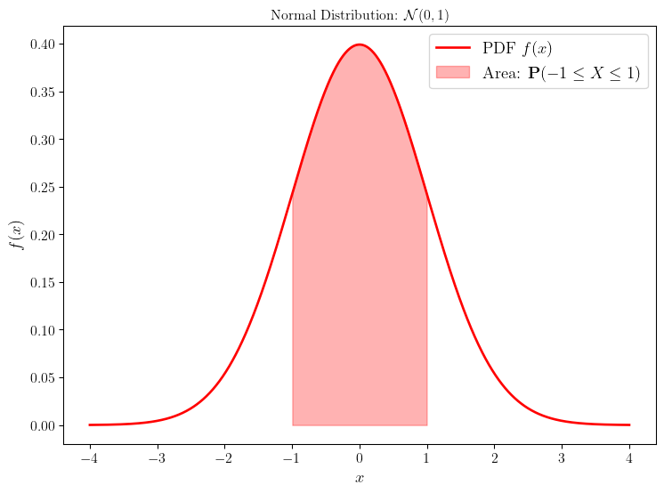
Moment of order 0: 1.0
Moment of order 1: 0.0
Moment of order 2: 1.0
Moment of order 3: 0.0
Moment of order 4: 3.0
Moment of order 5: 0.0
Moment of order 6: 15.000000000000004
Moment of order 7: 0.0
Moment of order 8: 105.00000000000001
Moment of order 9: 0.0Les moments sont informatifs sur une distribution. Par exemple, une distribution symétrique autour de zéro aura tous ses moments d’ordre impair nuls. Connaitre tous les moments d’une distribution ne permet pas toujours de reconstruire la distribution initiale cependant, mais cela est possible dans certains hypothèses. (Voir page Wikipedia, problème des moments).
Pour illustrer l’importance des moments, nous allons perturber la distribution Gaussienne centrée réduite de façon à obtenir une nouvelle distribution ayant la même moyenne et variance, mais des moments d’ordre supérieur différents.
gamma_1 = 0.3
perturb_pdf = pdf * (1 + gamma_1 * (x**3 - 3*x) / 6) #Expansion d'Edgeworth au premier ordre
perturb_pdf /= np.trapz(perturb_pdf, x) # Normalisation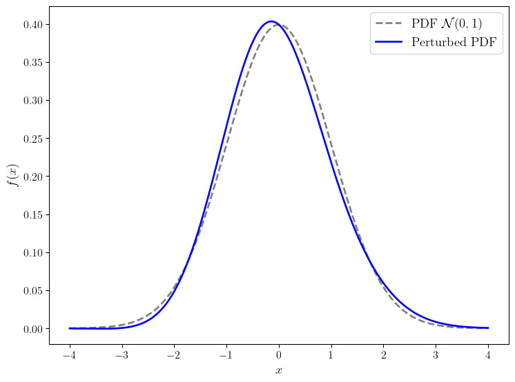
Perturbed Moment of order 0: 1.0
Perturbed Moment of order 1: -0.0008566106209006996
Perturbed Moment of order 2: 0.9989292159824635
Perturbed Moment of order 3: 0.2842600024911055
Perturbed Moment of order 4: 2.9796554355293745
Perturbed Moment of order 5: 2.7055476903617866
Perturbed Moment of order 6: 14.624166356410232
Perturbed Moment of order 7: 25.88650641087191
Perturbed Moment of order 8: 97.98345287646644
Perturbed Moment of order 9: 268.5362109946812Il est important de noter que la perturbation faite ici conserve la moeyenne et la variance mais introduit une asymétrie dans la distribution, ce qui modifie les moments d’ordre supérieur.
La courbe bleue n’est pas exactement une distribution car nous avons utiliser une approximation d’Edgeworth au premier ordre pour la construire. Cependant, elle illustre bien le fait que deux distributions peuvent partager les mêmes moyenne et variance tout en ayant des formes différentes, mises en évidence par leurs moments d’ordre supérieur.
3 Equation de diffusion
3.1 Marche aléatoire simple
On considère une particule effectuant une marche aléatoire simple en une dimension. À chaque pas de temps, la particule se déplace soit d’une unité vers la droite, soit d’une unité vers la gauche, avec une probabilité égale de 0.5 pour chaque direction.
Visualisons d’abord quelques trajectoires possibles de cette particule.
# In out example we use a step size a=1 and a time step tau=1
def draw_trajectory(num_steps, p=0.5):
steps = np.random.choice([-1, 1], size=num_steps, p=[1-p, p]) # p is the probability to move to the right
trajectory = np.cumsum(steps)
return trajectory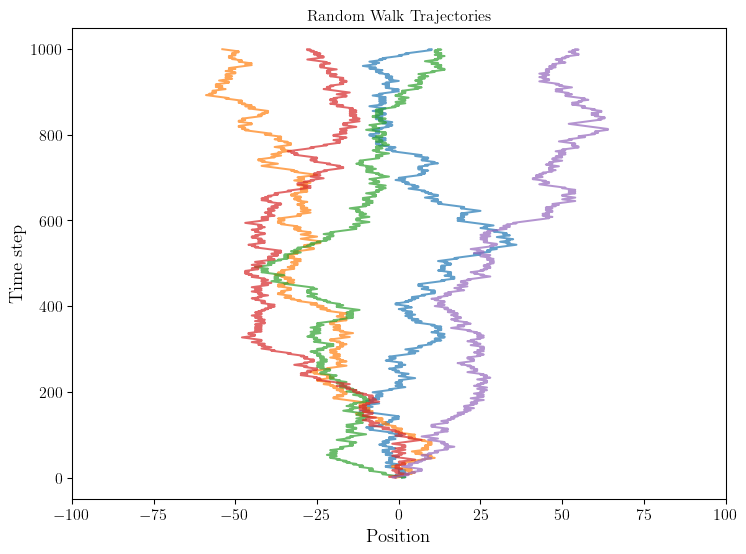
On observe que les trajectoires sont variables. Elles sont essentiellement aléatoires mais on peut constater que la position de la particule est relativement symétrique autour de l’origine.
Essayons de reproduire la distribution de probabilité de la position de la particule après un certain nombre de pas de temps en échantillonnant un grand nombre de trajectoires.
After 500 steps: Mean = -0.1486, Variance = 482.76311804
After 1000 steps: Mean = 0.0894, Variance = 998.1324076400001
After 2000 steps: Mean = -0.2102, Variance = 1991.6810159600002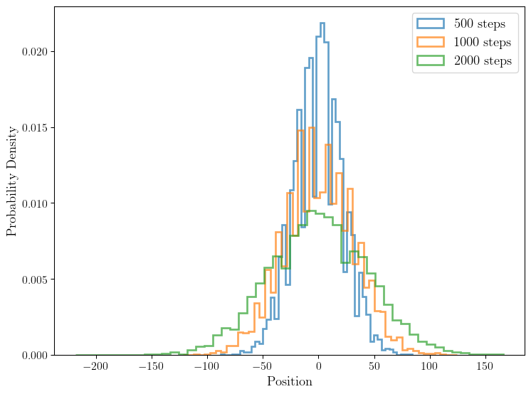
Il apparait très clairement que la distribution de probabilité de la position de la particule après un grand nombre de pas de temps ressemble à une distribution Gaussien centrée dont la variance augmente avec le nombre de pas effectués.
3.2 Marche aléatoire asymétrique
Ici, nous avons modélisé le phénomène de diffusion via une marché aléatoire symétrique. Amusons-nous à considérer maintenant une marche aléatoire asymétrique, où la particule a une probabilité \(p \neq 0.5\) de se déplacer vers la droite à chaque pas de temps. Prenons par exemple \(p=0.52\).
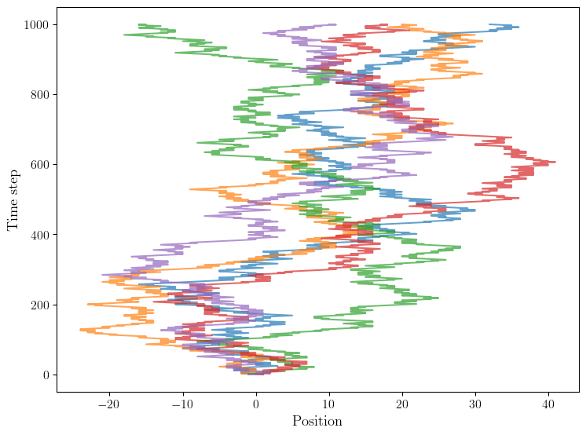
Il apparait très clairement que les trajectoires dérivent vers la droite, ce qui est intuitif. Il est possible de montrer que la marche aléatoire symétrique modélise un processus de diffusion pur, tandis que la marche aléatoire asymétrique modélise un processus de diffusion avec advection (un déplacement moyen non nul).
Observons cela en échantillonnant la distribution de probabilité de la position de la particule après un certain nombre de pas de temps dans le cas asymétrique.
After 500 steps: Mean = 19.8494, Variance = 493.12571964
After 1000 steps: Mean = 40.2044, Variance = 973.85982064
After 2000 steps: Mean = 80.0304, Variance = 1999.6502758400002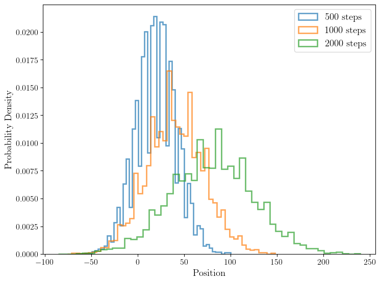
Ici, la moyenne de chaque distribution est non nulle et ce n’est pas une fluctuation statistique: le gaz de particule se déplace bel et bien vers la droite.
3.3 Marche aléatoire avec dépendance temporelle
Dans les exemples donnés précédemment, chaque pas est tiré aléatoirement de façon indépendante du passé. Cela se voir clairement dans la fonction draw_trajectory où on tire chaque pas avant d’en déduire la trajectoire.
Dans cet exemple, nous proposons de complexifier le modèle en introduisant une dépendance avec le passé avec une marche renforcée. L’idée est que la probabilité de se déplacer à droite ou à gauche dépend du nombre de fois où la chaine s’est déplacée à droite ou à gauche. Autrement dit, le pas à l’instant \(t\) dépend de l’historique des pas précédents.
Soit \(D_n\) la variable aléatoire représentant la direction du déplacement au \(n\)-ième pas de temps.
\[ \mathbb{P}(D_n = +1) = \frac{1 + R_{n-1}}{2 + (n-1)}, \quad \]
où \(R_{n-1}\) est le nombre de déplacements vers la droite effectués jusqu’au pas \(n-1\).
def draw_reinforced_trajectory(num_steps):
trajectory = np.zeros(num_steps)
right_moves = 0 #Counter for right moves
for t in range(1, num_steps):
p_right = ( 1 + right_moves ) / (2 + (t-1))
step = np.random.choice([-1, 1], p=[1 - p_right, p_right])
trajectory[t] = trajectory[t-1] + step
if step == 1:
right_moves += 1
return trajectory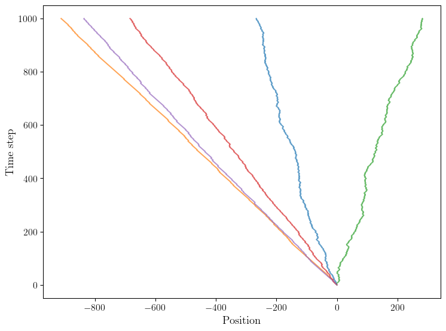
On observe que le comportement des trajectoires est complètement différent de celui des marches aléatoires considérées précédemment. En effet, la dépendance temporelle introduite dans le modèle crée une sorte d’effet de mémoire qui influence fortement la dynamique de la particule. Une particule qui commence à se déplacer vers la droite aura tendance à continuer dans cette direction, et vice versa pour la gauche. Cela conduit à des trajectoires plus “cohérentes” où la particule ne change pas fréquemment de direction, contrairement aux marches aléatoires indépendantes où les changements de direction sont fréquents et aléatoires.
Il est important de souligner que ce type de trajectoire provient d’un modèle. Il est pertinent à la fois de comprendre comment ces modèles se comportant, mais aussi de se demander dans quels contextes physiques réels ils peuvent s’appliquer. Par exemple, des phénomènes de marche aléatoire renforcée peuvent être observés dans certains systèmes biologiques où des agents (comme des cellules ou des animaux) modifient leur comportement en fonction de leurs expériences passées.